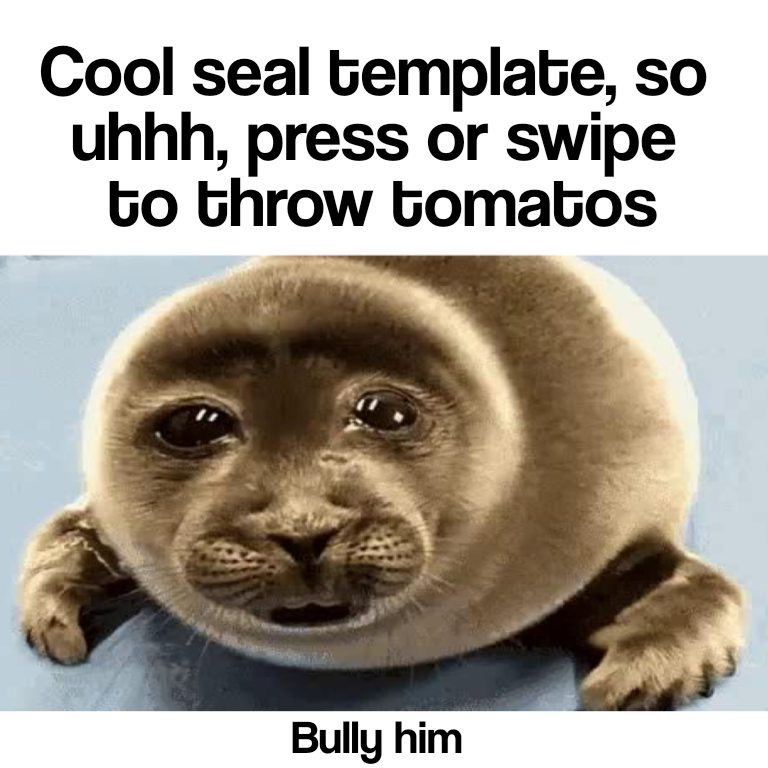

Editor
BGM toca aqui.
BGM toca aqui.
tt.fsp — Fire Source Project
what's is this for?
it's an web html where it makes the "Tomato Throw meme" easier to recreate ig.
why did u make this html?
just for fun.
what's fsp?
fsp stands for Fire-Source-Project.
what's is this for?
it's an web html where it makes the "Tomato Throw meme" easier to recreate ig.
why did u make this html?
just for fun.
what's fsp?
fsp stands for Fire-Source-Project.